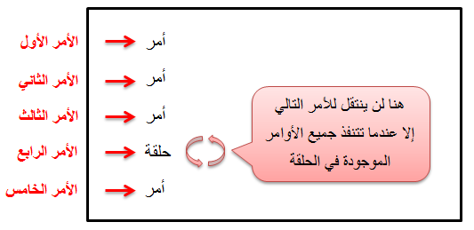

Pythonالحلقات في بايثون
مفهوم الحلقات في بايثون
حلقة: تعني Loop في اللغة الإنجليزية. نستخدم الحلقات لعدم تكرار نفس الكود عدة مرات, إذاً أي كود نريده أن يتنفذ عدة مرات, نقوم بكتابته داخل حلقة فتقوم هي بإعادة تنفيذ الكود قدر ما شئنا ضمن شروط معينة نقوم نحن بتحديدها.
طريقة تنفيذ الأوامر و الحلقات في الذاكرة
الأوامر في العادة تتنفذ بتسلسل وراء بعضها, و لكن الحلقات تجعل سهم تنفيذ الأوامر يقف عندها فيقوم بتنفيذ الأوامر التي بداخلها عدة مرات, و بعد أن يخرج من الحلقة يعود و يكمل تنفيذ باقي الأوامر التي تليها, كما في الصورة التالية:

الحلقات الموجودة في بايثون
| إسم الحلقة |
دواعي الإستخدام |
| For Loop |
تستخدم الحلقة for للمرور على جميع عناصر السلسلة أو المصفوفة بسهولة بدون الحاجة لتعريف عداد و تحديد أين يبدأ و أين ينتهي.
و تستخدم لتنفيذ الكود عدة مرات محددة.
تابع القراءة » |
| While Loop |
تستخدم الحلقة while لتنفيذ الكود عدة مرات غير محددة و يتوقف التنفيذ إذا تحقق شرط معين, لأن هذه الحلقة يتم توقيفها إذا تحقق الشرط الذي نضعه بين القوسين.
تابع القراءة » |
جمل التحكم في الحلقات في بايثون
جمل التحكم تعني Control Statements بالإنجليزية, و نستخدمهم للتحكم في سير تنفيذ الحلقات.
| جملة التحكم |
تعريفها |
| Break Statement |
الجملة break تستخدم بشكل عام لإيقاف الحلقة في حال تحقق شرط معين. ثم تنتقل للكود الذي يليها في البرنامج.
تابع القراءة » |
| Continue Statement |
الجملة continue تستخدم بشكل عام لإيقاف الدورة الحالية في الحلقة و الإنتقال إلى الدورة التالية فيها في حال تحقق شرط معين.
تابع القراءة » |
الوصول للأشياء التي تم تعريفها بداخل الحلقة من الخارج في بايثون
في أغلب لغات البرمجة لا يمكن الوصول للأشياء التي تم تعريفها داخل الحلقة من الخارج, أما في بايثون فإنه بإمكانك الوصول لهم.
مثال
Test.py
# بعدها سيتم عرضه .n هنا قمنا بإنشاء سلسلة من الأرقام الموجودة بين 1 إلى 5. في كل دورة في الحلقة سيتم جلب رقم من هذه السلسلة و تخزينه في المتغير
for n in range(1, 6):
print(n)
# بعد أن توقفت الحلقة n هنا عرضنا القيمة الموجودة في المتغير
print('n contains:', n )
•سنحصل على النتيجة التالية عند التشغيل
1
2
3
4
5
n contains: 5
•إذاً لاحظنا أننا استطعنا معرفة القيمة الأخيرة التي تم وضعها في المتغير n الذي تم تعريفه في الأساس بداخل الحلقة for خارجها.

 محرر الويب
محرر الويب نظام الألوان
نظام الألوان محول الوحدات
محول الوحدات محلل عناوين الشبكات
محلل عناوين الشبكات